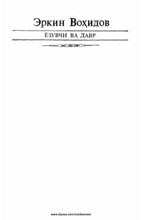

SSErkin Vohidovning adabiy o'ylari, she'riyat va davr haqidagi mushohadalari.
Mazkur kitob atoqli o'zbek shoiri va jamoat arbobi Erkin Vohidovning adabiy o'ylari, she'riyat va uning jamiyatdagi o'rni haqidagi mushohadalarini o'z ichiga oladi. Unda ijodkorning so'z san'ati, davr va yozuvchi burchi to'g'risidagi fikrlari bayon etilgan. Asar adabiyotsevarlar va keng kitobxonlar ommasiga mo'ljallangan.